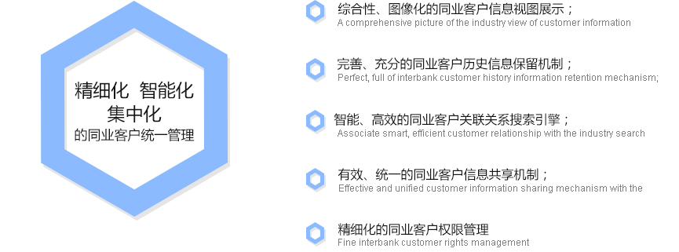

您当前的位置 :首页 > 产品中心 > 信贷流程类
信贷流程类CREDIT PROCESS CLASS

产品简介 安硕小企业授信管理系统（AmarSME）是一款面向中小型企业的全流程信贷服务系统。它顺应监管当局全面推动小微企业信贷业务的发展要求，帮助商业银行调整信贷结构、实施战略转型、摆脱同业同质化竞争局面以及优化其资产组合。该产品具备组件化产品设计...
查看更多>>产品简介 安硕信用风险管理系统是一个全面覆盖商业银行信用风险管理各方面的“信用风险管理支持系统”，通过流程、数据、模型的整合提供先进的信用风险管理技术平台与工具，以客户为中心、以市场为导向、以信贷业务风险管理为核心的满足商业银行发展需要和用户体验的新...
查看更多>>产品简介 安硕同业授信管理系统是安硕以精细化同业客户管理为基础、以统一授信额度管理为核心、以差异化授信流程为纽带的设计理念自主研发的管理系统，为商业银行加强和改善同业业务内外部管理，开展及规范资产负债业务的创新，优化金融资源配置，便利流动性管理...
查看更多>>产品简介 安硕零售信贷管理系统遵循以客户为中心的开放式零售信贷流程银行的管理理念，清晰地定义与实现零售信贷业务管理的核心职能，具体表现在产品驱动、网络营销、流水作业、策略控制、数据支撑、组合管理以及业务核算的全方位一体化的风险与效率统一。安硕...
查看更多>>您当前的位置 :首页 > 产品中心 > 信贷流程类 > AmarSME小企业授信管...
AmarSME小企业授信管理系统
安硕小企业授信管理系统（AmarSME）是一款面向中小型企业的全流程信贷服务系统。它顺应监管当局全面推动小微企业信贷业务的发展要求，帮助商业银行调整信贷结构、实施战略转型、摆脱同业同质化竞争局面以及优化其资产组合。该产品具备组件化产品设计、批量化营销模式、“信贷工厂式”作业流程、组合化风险管理等特点。系统灵活的框架和配置可以快速满足各种不同的小微企业信贷经营管理模式，全面支持银行各种创新产品的业务办理，实现银行在业务上针对小微信贷快速变革的要求。
1、精细化、智能化、集中化的同业客户统一管理
安硕同业授信管理系统基于同业客户的特殊性与多样性，全面完善差异化、精细化的同业客户信息，建立同业客户信息数据中心，以达到同业客户信息真实、准确、齐备，为同业客户授信业务办理及数据分析提供有力支撑。
安硕同业授信管理系统管理的同业客户类别包括但不限于：境内同业及境外同业；银行类同业（国有、股份制、城商行等）及非银行类同业（证券公司保险公司、信托公司等）等，同时针对同业客户在各类业务中所承担角色的差异性，如直接借款人、交易对手、最终承兑/背书人、担保人/金融质押品的最终偿付人等，提供差异性管理的功能支持，便于商业银行细分目标客户群，分层管理，差异化授信，深度挖掘同业客户资产业务潜力，带动其综合贡献度提升。
1.组件化的产品设计理念
主要通过产品要素参数化、组件构建化、高度模块化理念来设计信贷产品，针对小微信贷产品不断创新的特点，能够快速适应当前银行业务流程处理的多样性和产品不断创新的要求。
2.批量化的营销及授信模式
通过多渠道的合作模式，对有信贷需求的小微客户进行批量化的营销宣传，支持银行与政府部门、专业商会、协会建立合作关系，实现针对小微客户的批量授信方案。同时支持多种渠道合作，如电子银行、空中银行、机构网点及客户经理现场服务等，全面支持小微信贷融资业务的集群化、规模化、高速化发展。
3.“信贷工厂式”的高效作业流程
针对小微信贷业务量大、金额小、业务发生相对频繁等特点，建立类似标准化作业工厂一样的小微信贷管理系统。该系统支持自动化判断系统，通过规则、逻辑判断减少人工工作量，极大提高流程效率，同时还支持标准化、细分化的作业流程、专业化的岗位设置，满足各个作业流程环节集中化、批量化、电子化与规范化的要求，真正实现了工厂式、流水线式的高校作业。
4.组合化的风险策略管理
支持银行与核心大企业、中介、第三方机构的合作，根据不同行业、地域将大量小微客户进行整合、归集、分类，对其进行群体化、组合化的风险控制和限额控制，实现从组合角度考察授信风险、从而有利于发掘优质的客户，实现业务企业授信业务发展与风险管控的统一。
5.结构化的额度管控能力
提供多种额度管控模式，除小微客户自身额度外，还包括单一客户限额、集群额度、组合限额、第三方额度等。通过客户额度叠加来控制客户的总授信额度；通过集群额度和组合额度去控制客户业务的展开；通过引入第三方主体（担保公司、合作商等）对客户业务进行管控。不同类型的额度管理有效支持了小微企业的授信风险管理。
1.组件化的产品设计理念
主要通过产品要素参数化、组件构建化、高度模块化理念来设计信贷产品，针对小微信贷产品不断创新的特点，能够快速适应当前银行业务流程处理的多样性和产品不断创新的要求。
2.批量化的营销及授信模式
通过多渠道的合作模式，对有信贷需求的小微客户进行批量化的营销宣传，支持银行与政府部门、专业商会、协会建立合作关系，实现针对小微客户的批量授信方案。同时支持多种渠道合作，如电子银行、空中银行、机构网点及客户经理现场服务等，全面支持小微信贷融资业务的集群化、规模化、高速化发展。
3.“信贷工厂式”的高效作业流程
针对小微信贷业务量大、金额小、业务发生相对频繁等特点，建立类似标准化作业工厂一样的小微信贷管理系统。该系统支持自动化判断系统，通过规则、逻辑判断减少人工工作量，极大提高流程效率，同时还支持标准化、细分化的作业流程、专业化的岗位设置，满足各个作业流程环节集中化、批量化、电子化与规范化的要求，真正实现了工厂式、流水线式的高校作业。
4.组合化的风险策略管理
支持银行与核心大企业、中介、第三方机构的合作，根据不同行业、地域将大量小微客户进行整合、归集、分类，对其进行群体化、组合化的风险控制和限额控制，实现从组合角度考察授信风险、从而有利于发掘优质的客户，实现业务企业授信业务发展与风险管控的统一。
5.结构化的额度管控能力
提供多种额度管控模式，除小微客户自身额度外，还包括单一客户限额、集群额度、组合限额、第三方额度等。通过客户额度叠加来控制客户的总授信额度；通过集群额度和组合额度去控制客户业务的展开；通过引入第三方主体（担保公司、合作商等）对客户业务进行管控。不同类型的额度管理有效支持了小微企业的授信风险管理。
1.组件化的产品设计理念
主要通过产品要素参数化、组件构建化、高度模块化理念来设计信贷产品，针对小微信贷产品不断创新的特点，能够快速适应当前银行业务流程处理的多样性和产品不断创新的要求。
2.批量化的营销及授信模式
通过多渠道的合作模式，对有信贷需求的小微客户进行批量化的营销宣传，支持银行与政府部门、专业商会、协会建立合作关系，实现针对小微客户的批量授信方案。同时支持多种渠道合作，如电子银行、空中银行、机构网点及客户经理现场服务等，全面支持小微信贷融资业务的集群化、规模化、高速化发展。
3.“信贷工厂式”的高效作业流程
针对小微信贷业务量大、金额小、业务发生相对频繁等特点，建立类似标准化作业工厂一样的小微信贷管理系统。该系统支持自动化判断系统，通过规则、逻辑判断减少人工工作量，极大提高流程效率，同时还支持标准化、细分化的作业流程、专业化的岗位设置，满足各个作业流程环节集中化、批量化、电子化与规范化的要求，真正实现了工厂式、流水线式的高校作业。
4.组合化的风险策略管理
支持银行与核心大企业、中介、第三方机构的合作，根据不同行业、地域将大量小微客户进行整合、归集、分类，对其进行群体化、组合化的风险控制和限额控制，实现从组合角度考察授信风险、从而有利于发掘优质的客户，实现业务企业授信业务发展与风险管控的统一。
5.结构化的额度管控能力
提供多种额度管控模式，除小微客户自身额度外，还包括单一客户限额、集群额度、组合限额、第三方额度等。通过客户额度叠加来控制客户的总授信额度；通过集群额度和组合额度去控制客户业务的展开；通过引入第三方主体（担保公司、合作商等）对客户业务进行管控。不同类型的额度管理有效支持了小微企业的授信风险管理。
您当前的位置 :首页 > 产品中心 > 集中管理类
集中管理类CREDIT PROCESS CLASS
产品介绍 随着金融市场发展和业务快速扩张，国内商业银行面临的风险日益广泛、复杂和多变，传统的以计划指令或信贷规模控制风险暴露的方式已逐渐难以适应，需要尽快建立和实施基于风险计量和组合分析的更为科学、合理的组合管理模式。 组合风险限额管理是在...
查看更多>>产品介绍 安硕额度管理系统是面向银行客户而开发的一套系统，包括单一客户授信额度、集团授信额度、供应链额度、第三方额度等各种类型额度，涵盖各授信业务条线的统一额度管理系统。额度管理系统主要由额度管理和限额管理两大模块构成，搭建全行统一授信额度控管...
查看更多>>产品介绍 安硕抵质押品管理系统是安硕依据在金融行业十多年的管理信息系统建设经验，结合国内多家银行的抵质押品系统建设案例自主研发的管理系统，它能够实现抵质押品的全生命周期全流程管理，包括但不限于抵质押品政策管理、抵质押品准入调查管理、抵质押品价值...
查看更多>>您当前的位置 :首页 > 产品中心 > 风险量化类
风险量化类CREDIT PROCESS CLASS
系统概述 为帮助商业银行计算风险加权资产和资本充足率，加强风险管理，满足银监会监管要求，安硕科技应用自身多年来在信贷系统、内评系统和风险计量中积累的丰富经验，为各商业银行提供风险加权资产计量系统。 业务推动技术的发展，以业务驱动技术的产品设...
查看更多>>案例介绍 1.1内部评级系统业务咨询和产品实施客户列表风险业务咨询列表：招商银行全面信用风险分析体系咨询项目 招商银行对公信贷资产IT规划项目 兴业银行内部评级系统咨询项目 交通银行零售信贷(个贷/小企业)风险强化咨询项目 模型开发列表：浦发上海分行零售评分卡 浦...
查看更多>>产品介绍 安硕是专注于金融机构风险类平台建设的国内最主要的服务商，10余年来，安硕在风险领域积累了大量的经验。随着银监会监管指引的推进（以新巴塞尔协议III为基础），各类金融机构围绕评级和风险类系统持续开展精细化风险系统的建设潮，以加强内部平台的风险...
查看更多>>案例介绍1.1 财务报表管理与分析系统业务咨询和产品实施客户列表：光大银行财务报表管理与分析系统 渤海银行财务报表管理与分析系统 招商银行财务报表管理与分析系统 宁波银行财务报表管理与分析系统 杭州银行财务报表管理与分析系统 1.2 全国性股份制商业银行 G 项目...
查看更多>>您当前的位置 :首页 > 产品中心 > 业务处理类
业务处理类CREDIT PROCESS CLASS
产品介绍安硕资产证券化管理系统旨在实现资产证券化业务运作的电子化，对资产证券化项目/产品设立、池内资产筛选、封包、入池、日常管理、赎回、结清等全过程进行系统管理，有效提高业务运作效率，降低操作风险。积累形成资产证券化运营数据库，记录资产证券化项目及相...
查看更多>>产品介绍 安硕供应链金融管理平台是上海安硕信息技术股份有限公司（Amarsoft）的旗舰产品AmarSCF分为银行版(BE)和企业版(EE)两个版本。 安硕供应链金融管理平台（企业版）简称AmarSCF（EE），是由安硕自主研发一套成熟、先进的面向企业的供应链金融...
查看更多>>产品介绍 安硕供应链金融管理平台（银行版）简称AmarSCF（BE），是一套成熟、先进的供应链金融管理系统。AmarSCF（BE）最大特点是银行业务部可通过它根据融资客户需求快速地定制供应链创新产品、并迅速地推向市场，从而帮助银行在竞争激烈的供应链金融市场中赢得...
查看更多>>产品介绍 安硕互联网金融平台产品，是面向投资人、借款客户的交易平台和适用于P2P网贷业务模式的信贷核算与管理系统的整体解决方案，整体解决方案可以帮助客户高速直达互联网金融高地。 对于客户而言，在平台建设期主要的投入是基础软硬件平台、系统建设...
查看更多>>1. 典型案例 北京银行新一代个贷系统（管理核算一体化） 平安银行零售信贷管理核算一体化系统 东亚银行零售信贷管理核算一体化系统 深发展车贷管理核算一体化系统 平安银行公司信贷管理核算一体化系统 华润信贷管理核算一体化系统（包括公司、个人信贷） 三峡银行管理核...
查看更多>>您当前的位置 :首页 > 产品中心 > 监管报送类
监管报送类CREDIT PROCESS CLASS
产品介绍 AmarICR是Amarsoft个人征信接口系统的产品化名称。随着中国人民银行个人征信系统试点，安硕公司在2004年推出了首个版本（AmarICR 0.8）解决当时试点行的使用问题，而后随着个人征信系统的推广建设和规范的不断更新，安硕紧跟需求的变化相继推出了1.0、1...
查看更多>>产品介绍 AmarECR是Amarsoft企业征信接口系统的产品化名称。随着中国人民银行企业征信系统试点，安硕公司在2005年推出了首个版本（AmarECR 1.0）解决当时试点行的使用问题，而后随着企业征信系统的推广建设和规范的不断更新，安硕紧跟需求的变化相继推出了2.0、2....
查看更多>>产品介绍 AmarCRQ是Amarsoft征信信用报告查询接口系统的产品化名称，英文全称为Amarsoft Credit Report Query。 AmarCRQ3.0是AmarCRQ的最新版本，是市面上第一款功能完整的查询系统产品。本版支持最新的人行查询规范，支持企业信用报告和个人信用报告的两...
查看更多>>您当前的位置 :首页 > 产品中心 > 风险分析类
风险分析类CREDIT PROCESS CLASS
系统介绍 风险数据集市主要包含信用风险、市场风险、操作风险三个业务领域，这三个领域相对独立，其对应的三大风险的数据集市既可以物理的分开分别建设，也可以统一建模部署在同一环境中实施。其中信用风险数据集市整体划分为三个一级风险数据主题域，包...
查看更多>>Copyright ©2000-2016 Amarsoft all rights reserved. 上海安硕信息技术股份有限公司


 工信部备-沪ICP备07029072号
工信部备-沪ICP备07029072号
 沪网安备-31011002000633号
沪网安备-31011002000633号